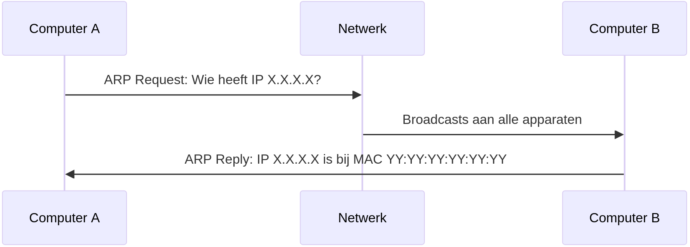

Netwerklaag
|
MAC |
IP |
| sterkte associatie |
"vast" |
"veranderlijk" |
| structuur |
vlak |
hiërarchisch |
| afhankelijk van |
fabrikant hardware |
subnet |
| vergelijk met |
rijksregisternummer |
thuisadres |
basisidee bereikbaarheid
IPv4 (classful)
- 192.168.0.222
- 11000000.101...
- hostgedeelte
- netwerkgedeelte
netmasker
11000000.1010000.00000000.11011110 # 192.168.0.222
11111111.1111111.00000000.00000000 # 255.255.0.0
11000000.1010000.00000000.00000000
speciale adressen
Opdrachten
- Is 10.4.3.0/16 een geldig netwerkadres?
- Is 192.168.0.0/16 een geldig netwerkadres?
- Is 192.168.0.0/8 een geldig netwerkadres?
- Is 10.4.224.0/18 een geldig netwerkadres?
- Is 172.25.13.0/24 een subnet van 172.16.0.0/12?
- Is 172.16.0.0/13 een subnet van 172.16.0.0/12?
- Met welke eerste bytewaarden kunnen subnetten van 10.0.0.0/8 allemaal beginnen?
- Met welke eerste twee bytewaarden kunnen subnetten van 200.16.0.0/12 allemaal beginnen?
Gegeven:
- IP-adres: 192.168.1.13
- lengte netmasker: 27
Gevraagd:
- Netwerkadres
- Broadcastadres
- Hostgedeelte (binair)
- Eerste en laatste hostadres subnet
- Maximaal aantal hosts
Gegeven:
- IP-adres: 172.16.5.88
- lengte netmasker: 20
Gevraagd:
- Netwerkadres
- Broadcastadres
- Hostgedeelte (binair)
- Eerste en laatste hostadres subnet
- Maximaal aantal hosts
Gegeven:
- IP-adres: 10.4.3.2
- lengte netmasker: 18
Gevraagd:
- Netwerkadres
- Broadcastadres
- Hostgedeelte (binair)
- Eerste en laatste hostadres subnet
- Maximaal aantal hosts
IP-adressen voor:
- subnetten (netwerk en broadcast)
- routers
- hosts
- niet voor hubs of switches
Routers (gateways)
Default gateway

Demo: invullen routeringstabel
Toekenning van adressen